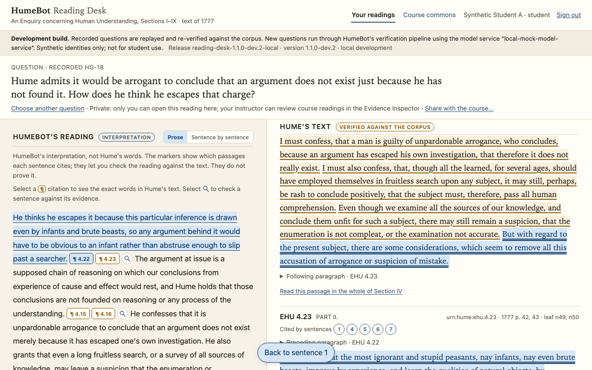
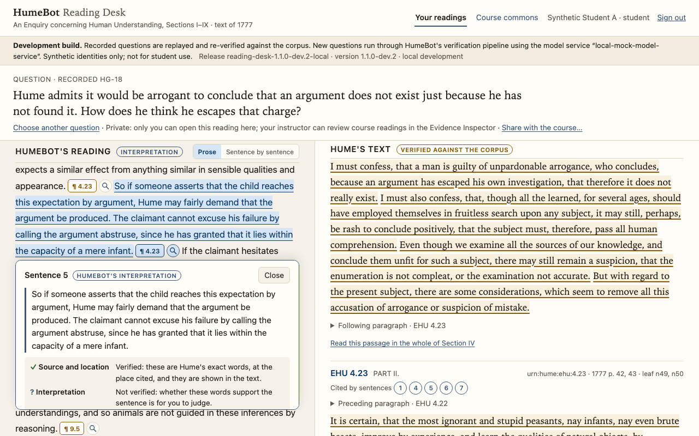
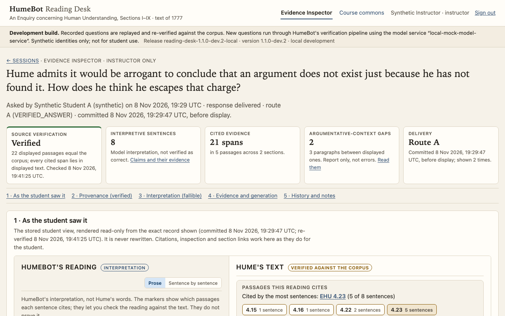

Demo
The Reading Desk in three minutes
A recorded walk through the development build (3 min 18 s, captioned, no sound): a student opens a question about Hume's problem of induction, reads HumeBot's answer beside the text, follows a citation to the exact words, reads the whole section, and returns. Then the instructor's view of the same answer.
What you are watching. A local development build with a synthetic course, synthetic student and instructor identities, and a recorded answer replayed and re-verified against the corpus. No live model was called, and no real student has used the application. HumeBot's reading in the video is its own interpretation and may be mistaken. The banner across the top of every screen says the same.
The recording
Transcript
- The HumeBot Reading Desk, running as a local development build. The identities are synthetic and the answers are recorded; no live model is called.
- A student signs in and chooses a question about Hume's Enquiry. Here: a question on Section IV, the problem of induction.
- Hume admits it would be arrogant to conclude that an argument does not exist just because he has not found it. How does he think he escapes that charge?
- Before anything is shown, the application re-verifies the answer against the pinned corpus and records it. Then the Reading Desk opens.
- Left: HumeBot's reading, labelled as interpretation. Right: Hume's text, labelled as verified against the corpus. Each sentence carries markers for the paragraphs it cites.
- At the top of Hume's text, the passages this reading cites, in the order of the 1777 text, with how many sentences cite each.
- Selecting a citation marker highlights exactly the words that sentence cites, in the whole paragraph, with the paragraphs around it one click away.
- "Back to sentence 1" returns to the reading.
- The magnifier inspects one sentence. Two separate verdicts: source and location are verified, these are Hume's exact words at the place cited; the interpretation is not verified. Whether the words support the sentence is for the reader to judge.
- Below the verdicts, the exact words the sentence cites, each with a way into the text.
- "Read it in Section IV" opens the whole section in the order of the 1777 text. The page says which sentence the reader came from and highlights the words it cites.
- Here the reader can judge the sentence against the surrounding argument: the paragraphs displayed with the answer are marked, and the cited words are highlighted inside the complete paragraph.
- "Back to sentence 5 of the reading" returns to the explanation at the same sentence.
- The reading can also be shown sentence by sentence. The wording never changes; only the layout does.
- Every answer ends with its limits and its provenance: a recorded response, replayed, re-verified against the corpus at this display, with the time of each check.
- The instructor's view. Signing in as the synthetic instructor opens the Evidence Inspector.
- Every reading in the course is listed. The instructor opens the student's answer.
- The summary row keeps two things apart: source verification, re-checked now with its time, and the interpretive sentences, which are model interpretation and are not verified as correct.
- Band 3 lists every sentence with the exact words it cites. "Cited" records which passages a sentence cites; it is not a record of what the model relied on, and not verification that the passage supports the claim.
- "Show in the student view" highlights the same words in the stored student view, rendered read-only from the exact record the student saw.
- The inspector also reports the paragraphs between displayed ones that the reading did not show. It flags no error: whether an omitted passage matters is the instructor's judgment.
- The verification log, the audit of who viewed what, and append-only instructor notes. HumeBot shows its evidence and its checks; the philosophical judgment stays with the reader and the instructor.
Three contributions, kept distinct: the problem of induction
The question in the recording comes from Hume's treatment of the problem of induction in Sections IV–V of the Enquiry. In a course, three kinds of contribution meet around such a question, and HumeBot's design keeps them apart and attributed. The instructor contributes substantive philosophical and pedagogical judgment, not the configuration of a chatbot.
What Hume wrote
Passages built from the controlled corpus, at locations a reader can check.
“To endeavour, therefore, the proof of this last supposition by probable arguments, or arguments regarding existence, must be evidently going in a circle, and taking that for granted, which is the very point in question.”
EHU 4.19
“All inferences from experience suppose, as their foundation, that the future will resemble the past, and that similar powers will be conjoined with similar sensible qualities.”
EHU 4.21
“This principle is CUSTOM or HABIT. For wherever the repetition of any particular act or operation produces a propensity to renew the same act or operation, without being impelled by any reasoning or process of the understanding …”
EHU 5.5
The instructor's framework
A reconstruction, in ordinary sentences, of the inference Hume examines and the premise it needs. Take the sun rising tomorrow.
The sun has always risen before → the sun will rise tomorrow. The step needs a connecting principle:
But what justifies this assumption?
Appealing to past experience to justify the Uniformity Principle already assumes that past experience is a reliable guide to unobserved cases. That is the circularity at the centre of Hume's argument. In the instructor's fuller reconstruction, PE–PI–UP–FE, a present impression (PI), seeing the sun set this evening, say, is what sets the expectation going; the sunrise example leaves it implicit, because it adds nothing to the question of justification.
Hume's negative conclusion, that no reasoning supplies the missing premise, leads to his positive account in Section V: what carries us from past to future is custom or habit, a principle of human nature rather than an argument.
A simplified illustration of the instructor's framework, in the instructor's own terms, not Hume's wording and not formal notation. It is a pedagogical interpretation: open to criticism, and to comparison with Hume's text.
What HumeBot said
From recorded HumeBot answers, written by the model from selected passages and verified for provenance, not for correctness. Each sentence cites the passages it rests on.
“The circle is this: any probable argument for the future's resembling the past would itself rest on that resemblance as its supposition, so it would assume the very conclusion it was meant to prove.”
cites EHU 4.19, 4.21 · a recorded answer to a question about the circle
“If the claimant hesitates even a moment, or offers an intricate or profound argument, he in a manner gives up the question. He thereby concedes that it is not reasoning that leads us to expect the past to resemble the future and similar effects from apparently similar causes.”
cites EHU 4.23 · sentence 6 of the answer in the recording
Students compare this reading with the text and with the instructor's framework, and are free to find it wanting.
Where the instructor's framework stands today. It is shown here as a distinct, attributed contribution beside Hume's verified text and HumeBot's independently generated explanation. It has not been incorporated into the model's prompts, training or generation; the pipeline that writes HumeBot's answers is instructor-agnostic. Presenting instructor materials inside the Reading Desk is a development direction, not a feature of the recording above.
What the demonstration shows
-
A question about Section IV
A synthetic student signs in and chooses a recorded question: Hume admits it would be arrogant to conclude that an argument does not exist just because he has not found it; how does he think he escapes that charge? Before the answer appears, the application re-verifies it against the pinned corpus and records the check.
-
The answer beside Hume's text
HumeBot's reading, labelled as interpretation, on the left; Hume's text, labelled as verified against the corpus, on the right. A list at the top of the text names the passages the reading cites, in the order of the 1777 edition, with how many sentences cite each.
-
A citation, followed to the exact words
Selecting a marker after a sentence highlights precisely the words it cites, inside the complete paragraph, with the neighbouring paragraphs one click away. A single control returns to the sentence.
-
Inspecting one sentence
The magnifier shows the sentence with two separate verdicts: source and location, verified, these are Hume's exact words at the place cited; interpretation, not verified, whether the words support the sentence is for the reader to judge.
-
The surrounding argument
From the inspected sentence, the whole of Section IV opens in the order of the text, naming the sentence the reader came from and highlighting its words, so the sentence can be judged against the argument around it. One link returns to the same sentence of the reading.
-
The instructor's Evidence Inspector
The synthetic instructor opens the same answer. The summary row keeps source verification, re-checked with its time, apart from the interpretive sentences, which are model interpretation and not verified as correct. Every sentence is listed with the words it cites and a way into the student's view and the section; the paragraphs the reading did not show are reported, never judged; the verification log and the audit record of who viewed what are kept, with the instructor's append-only notes.
Three moments
Select an image to open it at full size.


Opens the full-size image.

Opens the full-size image.

Opens the full-size image.What the demonstration does not show
- A live answer to a new question. The development build can run HumeBot's pipeline against a local stand-in that serves recorded answers; no model is called. A classroom configuration that answers new questions is proposed, not approved or qualified.
- Real students, a real course, or University sign-in. The identities are synthetic and the application runs on one developer's machine.
- That the answer is philosophically right. Verification establishes what Hume wrote and where. The reading is HumeBot's interpretation, labelled as such.